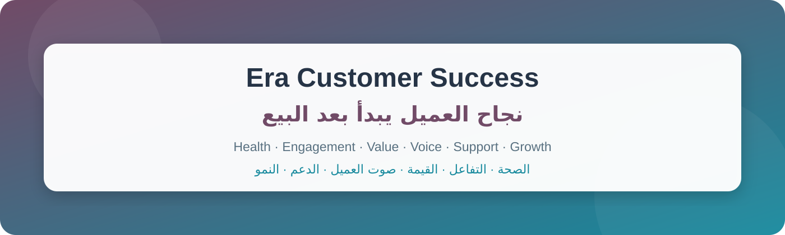

Customer success starts after the sale. Give every CSM one place to understand the customer, act on risk, prove delivered value, protect renewals, and validate the right service need before handing it to Sales.
نجاح العميل يبدأ بعد البيع. امنح كل مهندس نجاح شاشة واحدة لفهم العميل، والتدخل عند الخطر، وإثبات القيمة، وحماية التجديد، والتحقق من الاحتياج الصحيح قبل تسليمه للمبيعات.
Health, support, projects, communication, renewal, value and next actions come together in one 360° workspace.
الصحة والدعم والمشاريع والتواصل والتجديد والقيمة والخطوات القادمة في شاشة 360° واحدة.
A ranked daily worklist points every CSM to the most important customer action and preserves the outcome.
قائمة يومية مرتبة تقود المهندس إلى أهم تدخل، وتحفظ النتيجة والخطوة التالية.
Assess support interaction, project progress, communication response and agreed-work progress — no inaccessible user counts.
قياس من الدعم والمشاريع واستجابة التواصل وتقدم العمل، دون أعداد مستخدمين لا يملك الفريق صلاحيتها.
Prepare periodic value reviews, freeze the evidence, and capture customer-confirmed value, commitments and dates.
مراجعات دورية تثبّت الأدلة وتوثّق القيمة التي أكدها العميل والالتزامات والمواعيد.
Prioritise concerns, blockers and requests, assign a dated response, and follow them through to a documented resolution.
رتّب المخاوف والعوائق والطلبات، وأسند استجابة مؤرخة، وتابعها حتى توثيق الحل.
See purchased, consumed and remaining support hours with early warnings before balance or validity runs out.
تابع الساعات المشتراة والمستهلكة والمتبقية مع إنذار مبكر قبل نفاد الرصيد أو الصلاحية.
Explainable recommendations include the reason and discovery questions. CRM starts only after need, interest and timing are confirmed.
توصيات مفسرة بالسبب والأسئلة، ولا تبدأ فرصة CRM قبل تأكيد الاحتياج والاهتمام والتوقيت.
Next action, customer Q&A, service enrichment and message drafts stay reviewable, optional and grounded in visible sources.
الخطوة التالية والأسئلة وإثراء الخدمات ومسودات الرسائل اختيارية، قابلة للمراجعة، ومبنية على مصادر ظاهرة.
Risk, renewals, customer voice, support hours, overdue reviews, due work and missing data coverage in one live dashboard.
الخطر والتجديد وصوت العميل وساعات الدعم والمراجعات والعمل المستحق وفجوات البيانات في لوحة مباشرة.
Signals become prioritised daily work.
الإشارات تتحول إلى عمل يومي مرتب.
The CSM acts and records the outcome.
المهندس ينفذ ويسجل النتيجة.
Value, voice and engagement guide the next move.
القيمة والصوت والتفاعل توجه الخطوة التالية.
Only qualified needs reach Sales.
الاحتياجات المؤهلة فقط تصل للمبيعات.
No separate platform. It orchestrates Helpdesk, Projects, WhatsApp, CRM, Subscriptions, Surveys, Accounting and Activities.
لا منصة منفصلة؛ ينسق الدعم والمشاريع وواتساب وCRM والاشتراكات والاستبيانات والتحصيل والأنشطة.
Role-based customer access, company-level AI opt-in, protected URLs and human approval before commercial handoff.
صلاحيات حسب الدور، تشغيل ✦ باختيار الشركة، حماية الروابط، وموافقة بشرية قبل التسليم التجاري.
Customer health, engagement, value and growth — managed where your team already works.
صحة العميل وتفاعله وقيمته ونموه — تُدار في المكان الذي يعمل فيه فريقك.
Era Group · https://era.net.sa · Odoo 19 Enterprise · LGPL-3